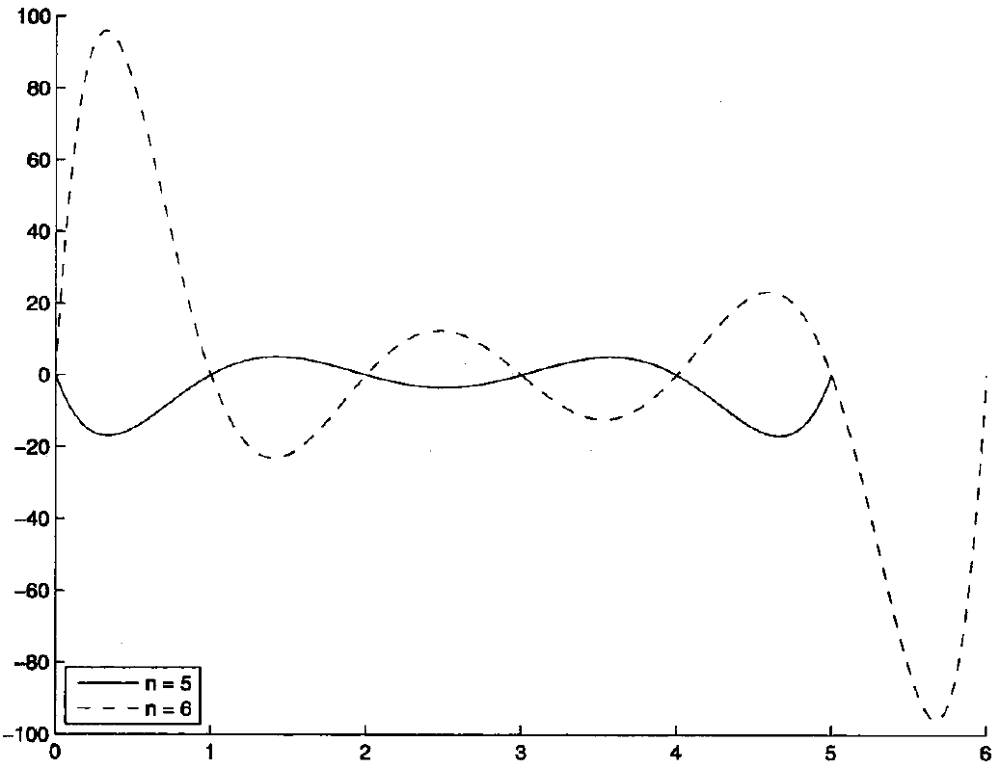

Numerical Integration
Generally speaking, we encounter an integration problem
which cannot be solved by indefinite integral, so we have to define a numerical formula to approximate the integration. Typical quadrature formula (求积公式) can be written as
where the subscript \(n\) denotes sampling on \(n\) points, \(x_k(k=1,2,\cdots,n)\) are nodes on \([a,b]\) and \(A_k\) are coefficients, whose value are only related with \([a,b]\), \(\rho(x)\) and the sampling points, rather than the formula of \(f\) itself.
Naively, we get error
which is obviously hard to get because we do not know the exact integration value. So we transfer to a concept called Algebraic Precision.
代数精度 | Algebraic Precision¶
The degree of accuracy, or precision, of a quadrature formula is the largest positive integer \(m\) such that the formula is exact for \(x^k\) , for each \(k = 0, 1,\cdots, m\). That is, we call a formula has \(m\) algebraic precision if there exists \(m\in \mathbb{N}^+\), s.t.
It is easy to see that for all polynomial \(p(x)\) of degree no more than \(m\), we have \(E_n(p)=0\).
If we find a simpler function \(p(x)\) that approximates \(f(x)\) on \([a,b]\), and \(I(p)\) is easy to get, then we can use \(I(p)\) to approximate \(I(f)\). That is, if
then
which is also small enough.
Newton-Cotes 公式 | Newton-Cotes Formulas¶
The simplest function is polynomials. So we try to find a polynomial \(p(x)\) to approximate \(f(x)\) and then use \(I(p)\) to approximate \(I(f)\). The following formulas are really natural if readers have been familiar with Interpolating Polynomial.
Given \(n+1\) points \(x_0<x_1<\cdots<x_n\), we have a Lagrange Polynomial
use the above polynomial as an approximation for integration. That is,
推导 | Deduction¶
In equation \(\ref{quadrature}\), if we let \(\rho(x)\equiv1\) and choose equidistant points:
then the corresponding quadrature formula is called Newton-Cotes Formula. In fact, if we let \(x=a+th\), \(t\in [0,n]\), then we have
common rule of quadrature formula
(i) Trapezoidal Rule
If we let \(n=1\) and get Trapezoidal Rule of quadrature
\(f\) is approximated by a linear expression.
(ii) Simpson’s Rule(Commonly used)
If we let \(n=2\) and get Simpson’s Rule of quadrature
\(f\) is approximated by a parabola expression.
(iii) Cotes' Rule
If we let \(n=4\) and get Cotes' rule of quadrature
where \(x_i=a+(b-a)/4\cdot i\), \((i=0,1,2,3,4)\).
误差分析 | Error analysis¶
Assume \(x_i(i=0,1\cdots,n)\) are equidistant(\(h\) apart), then we introduce
which have some properties.
Properties of \(\omega_n(x)\)
(i) \(\omega_n((a+b)/2+\xi)=(-1)^{n+1}\omega_n((a+b)/2-\xi)\)
(ii) For \(\xi\neq x_i(i=0,1,\cdots,n)\), the following statements hold.
Look at the graph, in which \(n=5,6\).

Then we define an integral of \(\omega_n(x)\)
which has a great property.
Properties of \(\Omega_n(x)\)
When \(n\) is en even number, then
(i) \(\Omega_n(a)=\Omega_n(b)=0\)
(ii) \(\Omega_n(x)>0, \quad\forall x\in(a,b)\)
Then we can prove the error equation for Newton-Cotes Formula.
Theorem of Error Analysis for Newton-Cotes Formula
(i) If \(n\) (number of intervals) is even, and \(f\in C^{n+2}[a,b]\), then we have
where
(ii) If \(n\) is odd, and \(f\in C^{n+1}[a,b]\), then the error expression is
where
Using remainder of interpolation polynomial in Newton's divided difference formula.
Corollary of Error Analysis
(i) For Tranpezoidal Formula, the rounding error is
(ii) For Simpson Formula, the rounding error is
数值稳定性 | Numerical Stability¶
Actually, it is usually hard to get an accurate value of \(f(x_k)\), so we introduce error here, which may influence afterwards computation. Now we quantify this effect.
Assume we use \(\tilde{f}(x_k)\) to replace \(f(x_k)\), denote \(\varepsilon_k=f(x_k)-\tilde{f}(x_k)\), then the integral error
So if \(\sum_{k=0}^n |A_k|\) is bounded, then the error can be bounded. However, we could prove that this item would go to infinity as \(n\rightarrow \infty\), so higher order of Newton-Cotes formula is impractical.
复化积分 | Composite Numerical Integration¶
We could use low order Newton-Cotes formula with Narrowing down \(h\). That is, use Simpson's formula multiple times on little interval of length \(h\).
Romberg 积分 | Romberg Integration¶
Here we have another way to improve precision of integration, which is Richardson's Extrapolation. This is a general method.
- Richardson's Extrapolation
Let
multiply \(2\) to both sides of equation \(\ref{richardson-2}\) and Subtract equation \(\ref{richardson}\), get
So
自适应求积方法 | Adaptive Quadrature Methods¶
非等距求积公式 | Non-equidistant Quadrature formula¶
Could we free some limits of the above quadrature, and get some more accurate formula? To be more specific, could we let the coefficient of the quadrature to vary, and do not limit the node to be integrated, and then obtain a better result?
Let us analyze that, if a quadrature has \(m\) algebraic precision, then its coefficients and nodes of formula \(\ref{I-genaral}\) must follow the system
一致系数公式 | Uniform Coefficient Formula¶
Given coefficients \(A_1,A_2,\cdots,A_n\), the above non-linear system of variables \(x_1,x_2,\cdots,x_n\) might have solution, with at least \(m\) algebraic precision.
Assume \(\rho(x)\equiv 1\), \(A_1=A_2=\cdots=A_n\), then it must follow
and
Common expression for uniform coefficient formula
(i) \(n=1\), then \(A_1=b-a\), \(x_1=(a+b)/2\), so
(ii) \(n=2\), then \(A_2=(b-a)/2\), so
Notice that here nodes are central symmetry about \(\frac{(a+b)}{2}\).
Gaussian 求积公式 | Gaussian Quadrature¶
Given \(n\) unknown nodes \(x_1<x_2<\cdots<x_n\), and denote
If we let
then the above quadrature must have at least \(n-1\) algebraic precision(readers can check this because it is Lagrange interpolation polynomial, but non-equidistant nodes). That is, when using \(n\) nodes to interpolate and then integrate, we must get a quadrature formula with \(n-1\) algebraic precision. Now we analyze where the upper bound is for this quadrature formula if we choose a proper position of there \(n\) nodes.
Interpolation a function has a similar error formula like in Newton-Cotes Formula
Notice that the degree of \(f[x_1,x_2,\cdots,x_n,x]\) declines \(n\)(Because \(x\) is \(n\) times divided), and assume \(f(x)\) is a polynomial of degree larger than \(n-1\). If we want to let the quadrature formula have \(m(m>n)\) algebraic precision, then if and only if for all polynomial \(q(x)\) of degree no more then \(m-n\), we have
Apparently, \(m-n\) needs to be less than \(n\), for \((\omega_n,\omega_n)>0\)(inner product), which means \(m\) could be at most \(2n-1\). If \(\omega_n(x)\) is a \(n\)th orthogonal polynomial, it can satisfy the above condition. So if we choose the roots of this polynomial as nodes to be integrated, then the corresponding quadrature formula has \(2n-1\) algebraic precision.
Theoretically speaking, Gaussian quadrature formula always exists, but in practice it is not easy to solve. Here we use method of undetermined coefficients.
Using different orthogonal polynomials, we can directly deduce some Gaussian quadrature.
Examples of Gaussian Quadrature
(i) \(\rho(x)\equiv 1\) integrated on region \([-1,1]\), the corresponding polynomial is Legendre Polynomial
So the coefficients are
with error
(ii) \(\rho(x)=\sqrt{1-x^2}\), integrated on region \([-1,1]\), the corresponding polynomial is Second class Chebyshev polynomial
using its roots as integration nodes we get
with error